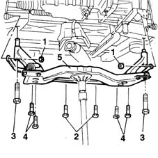

4410D14 front suspension crossbeam - r+r with wishbones removed
- Path
- Procedures > 44 SUSPENSION AND WHEELS > 4410 FRONT SUSPENSION > 4410D frame and cross beam > 4410D14 front suspension crossbeam - r+r with wishbones removed
- Kind
- repair procedure (removal / refitting; the operation number is the code)
- Applies to
- all engines; all production periods
- Interactive page
- https://sloeber94.github.io/elrnDB-fMltpl/en/#/2891714
Applies to: all engines; all production periods
 Removing
Removing
 Refitting
Refitting1076B50 exhaust pipe attachment to engine - r + r
- 1076A32 exhaust rigid mount - r r
1008A44 rear rigid mount - r r
1008B20 power unit intermediate mount flexible block - replace
1. Undo the nuts and separate the front anti-roll bar from the reaction rods.
2. Undo the bolts fixing the power assisted steering box to the suspension crossmember.
Position a hydraulic jack under the suspension crossmember.
3. Undo the bolts fixing the crossmember to the bodyshell.
4. Undo the bolts fixing the intermediate crossmember to the bodyshell.
5. Remove the suspension crossmember complete with intermediate crossmember.

Applies to: all engines; all production periods
Refitting
RemovingPosition the suspension crossmember on a hydraulic jack.
Raise the hydraulic jack and place the crossmember near the mountings on the bodyshell.
Tighten the bolts fixing the intermediate crossmember to the bodyshell to torque.
 | Fastening | Component | Ø | Value (daNm) |
|---|---|---|---|---|
- | Bolt | INTERMEDIATE FRONT SUSPENSION BEAM | M10 x 1.25 | 9 |
Tighten the bolts fixing the crossmember to the bodyshell to the recommended torque.
| Fastening | Component | Ø | Value (daNm) |
|---|---|---|---|---|
- | Bolt | ENGINE OR ROD ANCHORAGE BEAM | M12 x 1.25 | 12 |
| Fastening | Component | Ø | Value (daNm) |
|---|---|---|---|---|
- | Bolt | ENGINE OR ROD ANCHORAGE BEAM | M12 x 1.25 | 15.2 |
Remove the hydraulic jack.
Tighten the bolts fixing the power assisted steering box to the suspension crossmember to the recommended torque.
| Fastening | Component | Ø | Value (daNm) |
|---|---|---|---|---|
- | Bolt | POWER STEERING BOX | M10 x 1.25 | 7 |
Tighten the nuts fixing the front anti-roll bar to the reaction rods to the recommended torque.
| Fastening | Component | Ø | Value (daNm) |
|---|---|---|---|---|
- | Nut | FRONT ANTI-ROLL BAR. ANCHORAGE ROD. | M10 x 1.25 | 6 |
1008B20 power unit intermediate mount flexible block - replace
1008A44 rear rigid mount - r r
- 1076A32 exhaust rigid mount - r r
Topics linked from this page (4)
- 1008A44 rear rigid mount - r r
- 1008B20 power unit intermediate mount flexible block - replace
- 1076B50 exhaust pipe attachment to engine - r + r
- 4450A10 front wheel geometry - check using optical equipment - includes front wheel tow-in adjustment if necessary